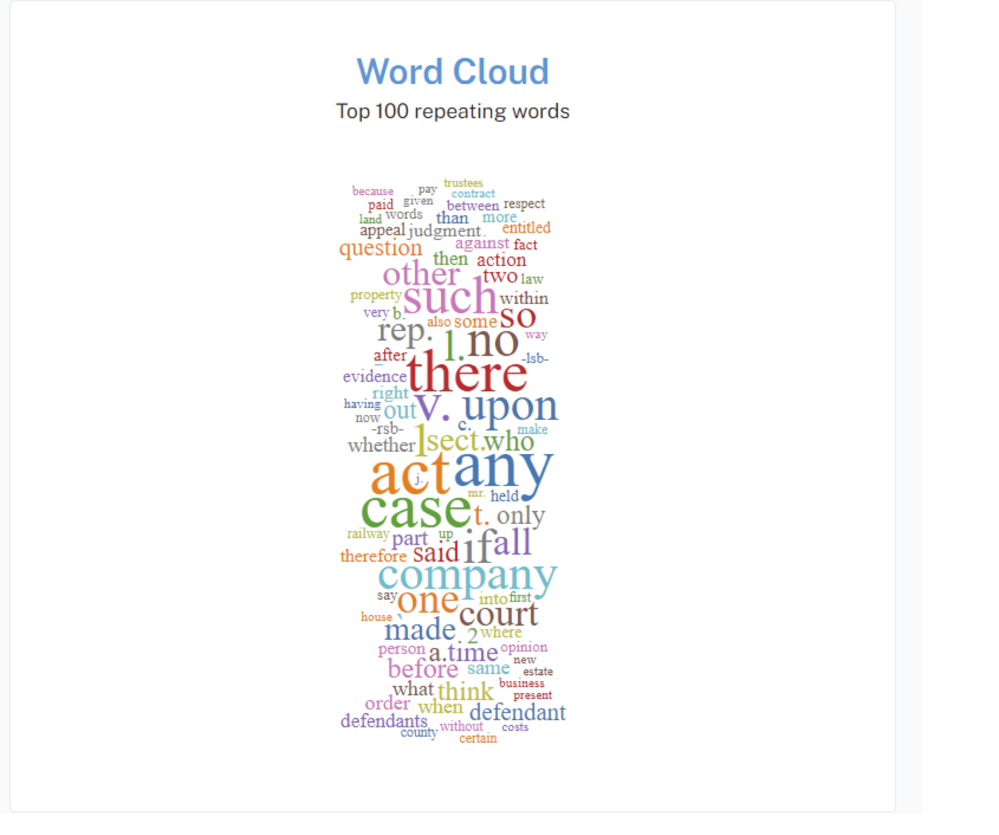
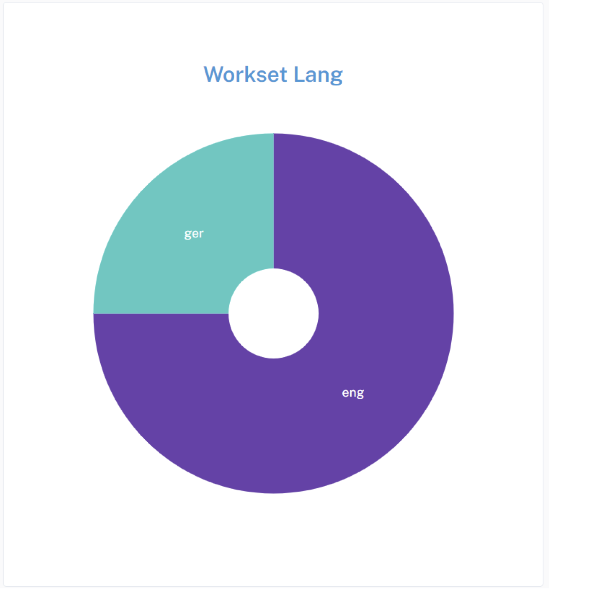
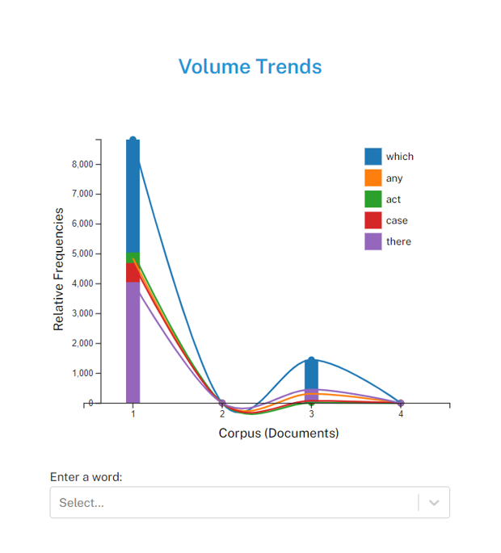

5 Creating Summary Widget and Notebook
The Summary offers a brief, textual summary of the current corpus, detailing its word count, unique word count, longest and shortest document, highest and lowest vocabulary densities, readability rate
5.1 Overview
5.2 Exploring Textual Data with the Torchlite Summary Widget
In this Hackathon, we’re excited to introduce participants to the “Torchlite Summary” widget, a powerful tool designed to enhance your experience with textual data analysis.
Developed using Python in a Jupyter Notebook environment and leveraging the HathiTrust Research Center (HTRC) APIs, this widget offers a streamlined approach to summarizing and exploring large datasets. Whether you’re analyzing literary works, historical documents, or any extensive text corpus, “Torchlite Summary” provides key insights through word frequencies, trends, and thematic overviews.
We encourage all participants to utilize this tool to uncover hidden patterns, compare textual features, and drive their projects to new depths of analysis. A step-by-step guide within the notebook will help you get started, offering insights into API integration, data visualization, and customization options to tailor the tool to your specific research questions.
5.3 Different Visualizations
In this section, we will summarize some of the sample visualizations in different programming languages that can be made using TORCHLITE API.
5.3.1 Word Cloud
A word cloud is a visualization technique for displaying text data in which the importance of each word is shown through its size. Typically, the more frequently a word appears in the text, the larger it appears in the word cloud. It’s useful for quickly identifying the most prominent terms in a dataset or text corpus.
The Word Cloud widget is being displayed using React and D3 libraries. Here’s a high-level overview of how it works:
5.3.1.1 Internal working of Word Cloud
Data Fetching: The component fetches data from an external API endpoint (https://tools.htrc.illinois.edu/ef-api/worksets/${worksetId}/volumes) using fetch API. This API returns volumes of text data along with their token counts.
Data Processing: Once the data is fetched, it is processed to extract the token counts for each word. Common words and punctuation marks are filtered out, and the frequency of each remaining word is calculated across all volumes.
for (const volume of data.data) {
let individualVol = 0;
loacalPerVolDict[volume.htid] = {}
for (const page of volume.features.pages) {
const body = page.body;
if (body.tokensCount !== null) {
updateDict(body.tokensCount,loacalPerVolDict[volume.htid]);
}
total += page.tokensCount;
individualVol += page.tokensCount;
}
}Word Cloud Generation: The most frequent words are selected, and their frequencies are used to determine the size of each word in the word cloud. D3’s Word Cloud component (react-d3-cloud) is used to generate the Word Cloud visualization. This component takes in data in the form of an array of word objects, where each object contains the text of the word and its frequency.
Rendering: The Word Cloud component is rendered within the React component, with additional styling and customization options such as font size, rotation, and padding.
<WordCloud
width={1000}
height={3000}
data={data}
fontSize={fontSize}
rotate={rotate}
padding={6}
spiral="rectangular"
random={Math.random}
/>
Stopwords:
[
'a', 'an', 'the', 'and', 'but', 'or', 'for', 'nor', 'not', 'in', 'on', 'at', 'to', 'of',
'by', 'with', 'about', 'above', 'below', 'over', 'under', 'above', 'below', 'from',
'as', 'I', 'you', 'he', 'she', 'it', 'we', 'they', 'me', 'him', 'her', 'us', 'them',
'my', 'your', 'his', 'its', 'our', 'their', 'mine', 'yours', 'hers', 'ours', 'theirs',
'this', 'that', 'these', 'those', 'is', 'am', 'are', 'was', 'were', 'be', 'being',
'been', 'have', 'has', 'had', 'do', 'does', 'did', 'will', 'shall', 'should', 'would',
'can', 'could', 'may', 'might', 'must', 'shall', 'should', 'would', 'cannot', 'could not',
'can\'t', 'couldn\'t', 'don\'t', 'didn\'t', 'won\'t', 'wouldn\'t', 'shouldn\'t', 'mustn\'t',
'let\'s', 'etc.', '-rrb-', '-lrb-', '--', '-', 'a','b','c','d','e','f','g','h',
'i','j','k','l','m','n','o','p','q','r','s','t','u','v','w','x','y','z',"''","``","'s",
"..."
];
punctuationMarks = [".", ",", "!", "?",";",":","'"];Creating a word cloud often involves filtering out common words, also known as stopwords, to emphasize the more unique or relevant words within a text.
Interactivity: The component provides interactivity features such as downloading the word cloud as an image (PNG or SVG) or as CSV data.
Summary: All in all, the Word Cloud widget provides a visually appealing and informative way to explore the most common words in a dataset or text corpus, facilitating quick insights into the underlying textual data.

5.3.2 Pie Chart
This pie chart widget, similar to the word cloud widget, serves to visualize data, but in this case, it focuses on the distribution of languages within a given dataset or workset (volumes of novels).
5.3.2.1 Internal working of Word Cloud
Data Fetching: Data is fetched from an external API endpoint using the fetch API. In this case, the API endpoint is https://tools.htrc.illinois.edu/ef-api/worksets/$%7BworksetId%7D/metadata. The fetched data contains information about the languages present in the dataset.
Data Processing: Upon receiving the data, it’s processed to count the occurrences of each language. The count of each language is stored in the languageCount state.
const count = {};
data.data.forEach(item => {
const language = item.metadata.language;
if (language) {
count[language] = (count[language] || 0) + 1;
}- Rendering the Pie Chart: The LanguagePieChart component is responsible for rendering the pie chart. It receives the language count data as props. Using D3.js, it generates the pie chart based on this data.
<MainCard
content={false}
sx={{
padding: theme.spacing(8),
display: 'flex',
flexDirection: 'column',
alignItems: 'center',
position: 'relative',
height: '650px',
width: '600px'
}}>Drawing the Chart: Inside the drawChart function, D3.js is used to create the SVG elements necessary for the pie chart. Each language is represented as a slice in the pie chart, with its size proportional to its count in the dataset.
function drawChart() { // Remove the old svg d3.select('#language-pie-container') .select('svg') .remove(); // Create new svg const svg = d3 .select('#language-pie-container') .append('svg') .attr('width', width) .attr('height', height) .append('g') .attr('transform', `translate(${width/2}, ${height/2})`); const arcGenerator = d3 .arc() .innerRadius(innerRadius) .outerRadius(outerRadius); const pieGenerator = d3 .pie<{ label: string; value: number }>() // Explicitly set the type here .padAngle(0) .value((d) => d.value);Color Encoding: D3’s color scale is used to assign colors to each slice of the pie chart. The interpolateCool color scheme is used here.
Updating the Chart: The useEffect hook is utilized to update the chart whenever the language count data changes. This ensures that the chart reflects the latest data fetched from the API.
const formattedData = Object.entries(data).map(([language, count]) => ({ label: language, value: count }));
const arc = svg
.selectAll()
.data(pieGenerator(formattedData))
.enter()
.append('path')
.attr('d', (d: any) => arcGenerator(d) as string) // Explicitly cast to string
.style('fill', (_, i) => colorScale(i))
.style('stroke', '#ffffff')
.style('stroke-width', 0);Styling: The pie chart is styled to have a white stroke around each slice and white text labels, providing contrast against the colored slices.
const text = svg
.selectAll()
.data(pieGenerator(formattedData))
.enter()
.append('text')
.attr('text-anchor', 'middle')
.attr('alignment-baseline', 'middle')
.text((d: any) => d.data.label)
.style('fill', 'white') // Set text color to white
//.style('fill', (_, i) => colorScale(formattedData.length - i))
.attr('transform', (d: any) => {
const [x, y] = arcGenerator.centroid(d);
return `translate(${x}, ${y})`;
});
}Summary: All in all, the pie chart widget provides a visual representation of the distribution of languages within a dataset, enabling users to quickly grasp the relative prevalence of different languages.

5.3.3 Trends
You can make a ‘Volume Trends’ widget to analyze word frequency trends within a corpus of novels. Its functionality encompasses:
Data Acquisition and Processing: Upon component initialization, the widget interacts with an API endpoint to retrieve volume data from a specified workset, typically a collection of novels. The received data is then processed to extract pertinent information, notably the frequency of words across the volumes.
Interactive Search Capability: Users engage with the widget by inputting text either through typing or selecting from a dropdown menu. As characters are entered, the widget dynamically updates to reflect the frequency trends of words that match the entered criteria. This interactive search feature enhances user experience by facilitating rapid exploration of word frequency patterns.
Wildcard Functionality: An additional feature provided by the widget is the ability to utilize wildcard characters. Specifically, users can employ a wildcard, such as an asterisk, to denote a partial word search. For instance, typing c would trigger a display of word frequency trends for all words starting with the letter c across the volume of novels. This wildcard functionality expands the scope of exploratory analysis, enabling users to uncover broader trends and patterns within the corpus.
Chart Rendering with D3.js: The core of the widget’s visualization lies in its utilization of D3.js, a JavaScript library for creating dynamic, interactive data visualizations in web browsers. Through D3.js, the widget constructs a visually compelling representation of word frequency trends, employing elements such as scatter plots, bar charts, and connecting lines to convey insights effectively.
Dynamic Data Updates: As users interact with the widget, whether through typing, selecting from the dropdown, or employing wildcard characters, the displayed chart updates in real-time to reflect the evolving word frequency trends. This dynamic nature ensures that users receive immediate feedback on their inputs, fostering a responsive and engaging user experience.
Download Options: To facilitate further analysis or sharing of insights, the widget offers users the ability to download the chart as an image file (PNG or SVG) or export the underlying data as a CSV file. This functionality enhances the widget’s utility by enabling users to seamlessly integrate the generated visualizations and data into their workflows.
Additional Features: Beyond its core functionality, the widget includes supplementary features such as tooltips, providing users with contextual information when interacting with data points on the chart. These features enhance the overall usability and informativeness of the widget, contributing to a richer and more insightful user experience.
Therefore, this widget can combine sophisticated data processing, interactive search capabilities, advanced visualization techniques, and user-friendly features to offer a powerful tool for exploring and analyzing word frequency trends within a corpus of novels. Its technical underpinnings, including D3.js integration and dynamic data updates, ensure robust functionality and usability for users engaged in text analysis and exploration.
